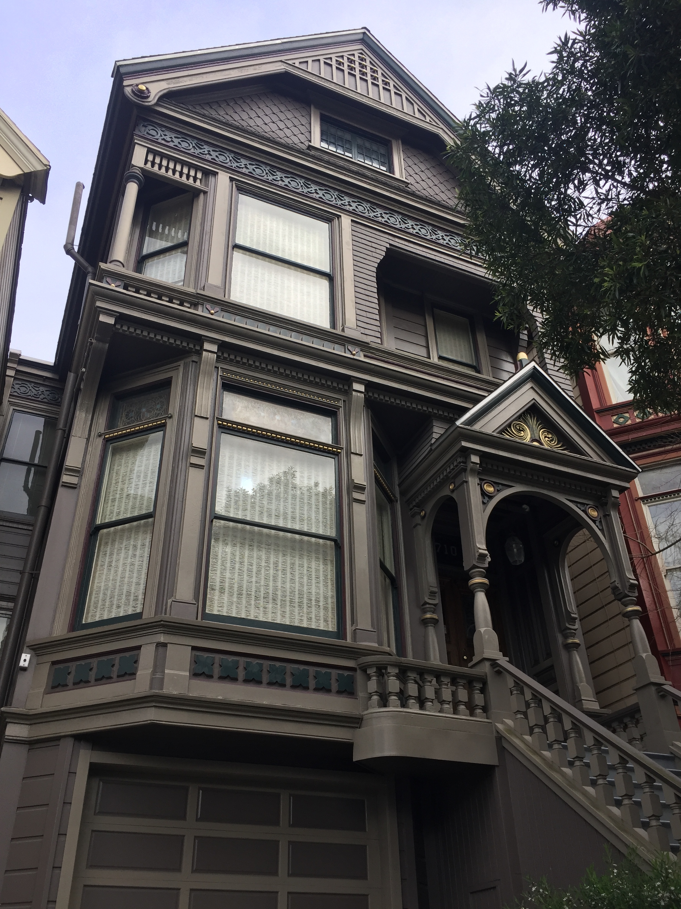

Greetings Aliens, and welcome to
Haight Ashbury
One of the grooviest places this side of anywhere. Put some flowers in your hair and go with the flow. Good Vibes Only!
Haight-Ashbury is by far my favorite district in San Francisco. This neighborhood is
famous for being the birthplace of hippie counterculture in the 1960s. It became a haven for
young people across the country who protested capitalism, consumerism, and everything 1950s
America is famous for. Haight-Asbury became a community based upon countercultural ideas,
drugs, and music.
The summer of love, in 1967, marked the entrance of psychedelic rock music into the
mainstream, for which Haight-Ashbury served as a hub. Jefferson Airplane, the Grateful Dead,
and Janis Joplin all lived very close to each other and were huge members in the Haight
community.
Today, the Haight is a still a heart of counterculture fashion, music, comedy, and food. Many newer bands can be found playing concerts there, and every summer the Haight-Ashbury Street
fair is a weekend long celebration of art, music, and free love. You can still find loads of tie-dye in the thrift stores, the scent of incense in the air, and the occasional vagabond wandering from here to nowhere.
Love on Haight

Love on Haight is one of my favorite stores in Haight-Ashbury. It is filled wall-to-wall with
every imaginable article of clothing tie-dyed with pastels, vibrant colors, or weird patterns.
Everything you need to become a modern day music-loving flower child lives in this store. There
is also wonderful history about the Haight and the influence the Grateful Dead had on the district
in a little waiting area in the back. If you want to meet some original hippies who thrived in
Haight Ashbury in all its glory, the owners of this store are your people. Plus, the vibes are pretty
groovy!
Check out some of their fantastic clothes HERE!
Grateful Dead House

The Grateful Dead House (710 Ashbury St) is another super cool landmark in Haight Ashbury.
This is the house the Grateful Dead lived in throughout the late 60s-early 70s while making some
of their earlier hits, and while the counterculture movement in the Haight was thriving. A
beautiful townhouse with a lot of creative energy, this house is a must-see for any Dead Head, or
any person trying to understand what is going through the minds of all the hippies twirling around this
part of San Francisco.
To understand the significance of this house for the Grateful Dead and their fans, check out
this article written by Grateful Dead drummer, Bill Kreutzmann.
Decades of Fashion

Decades of Fashion is like the letterform archive of vintage clothing. Authentic, beautiful
clothing from all classic American decades starting in the 1920s has a home in this hidden gem
of a thrift store. Looking for accessories, shirts, pants, dresses, or anything in between? Every
single thing for sale inside Decades of Fashion has its own unique story, and will make your
wardrobe about 30x better. (My favorite personal purchase from here is a sky blue 1970s cowgirl
shirt). One of the best stores in all of San Francisco, Decades of Fashion makes Haight Ashbury
even cooler - if that’s even possible.
From wedding attire to the best Halloween costume ever, Decades of Fashion has it all. You can do some online shopping with them
here
Haight Poster Store
One of the best aspects of the Haight is all of the musical influence. There are countless murals,
music stores, and usually there’s music playing. One of my favorite parts of music culture is the
merchandise - especially band posters. Right underneath some giant heels exiting a window is
Haight Ashbury Posters, a great store for vintage band posters, prints, postcards, tapestries, and
more. There are some pretty rad posters from past Haight Ashbury street fairs, as well as lots
of fun psychedelic art pieces. It’s also a smoke shop - if anyone wants to **legally** participate
in consuming California’s favorite plant. This store will provide a very authentic Haight Ashbury
experience and is quite the trip.
If you're interested in learning about the rules of Mary Jane in California,
Here's the website for you
Summer of Love Burger Urge!
Are you hungry? For some good art or possibly a burger? The Burger Urge, on the corner of
Clayton and Haight St is the place to get both. I don’t eat meat, but my friends who do say the
Burger Urge is absolutely delicious, their fries are awesome and the burgers are nice and juicy.
On top of the Burger Urge is a mural of the Summer of Love and some of its primary
influencers - Jerry Garcia, Janis Joplin, and all of their hippie children frolicking around them.
The blue sky of the mural and the red trim of the building are really nice visual compliments, and
the mural is just weird enough to fit right in on Haight Street. This is one of my favorite
buildings to walk by and absorb every time I find myself wandering along.
Relive the history of the Summer of Love here